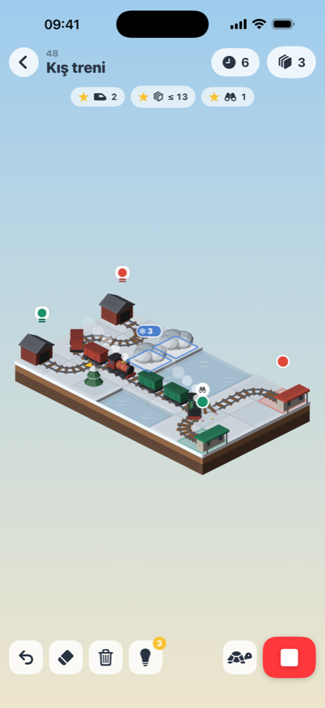
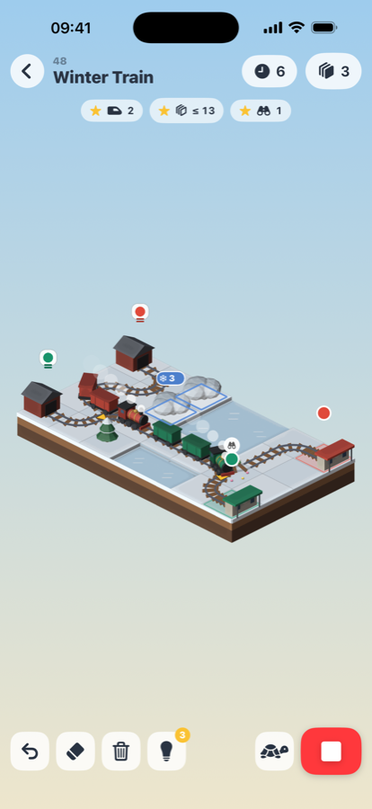

Express Isles
Tren bulmacası · Train puzzle


Express Isles, küçük adalarda geçen sakin ama kafa yoran bir tren bulmacası. Rayları parmağınla sürükleyerek döşe, makaslara dokunup trenlerin hangi yola sapacağını seç, ▶'e bas ve izle. Her tren kendi rengindeki istasyona, çarpışmadan varmalı.
5 bölge, 50 ada, her gün yeni bir bulmaca, yıldızlarla açılan altı lokomotif. Reklam yok, satın alma yok, internet gerekmez, veri toplanmaz.
Express Isles is a calm but clever train puzzle set on little islands. Drag to lay track, tap a switch to choose which way the first train turns, press ▶ and watch. Every train must reach the station of its own colour without a crash.
5 regions, 50 islands, a new puzzle every day, six engines to win with your stars. No ads, no purchases, no internet needed, no data collected.